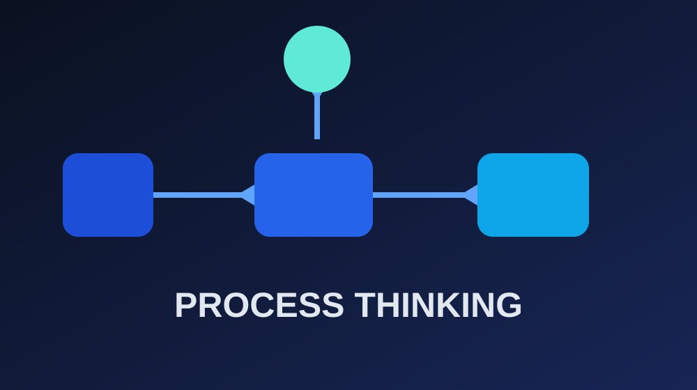
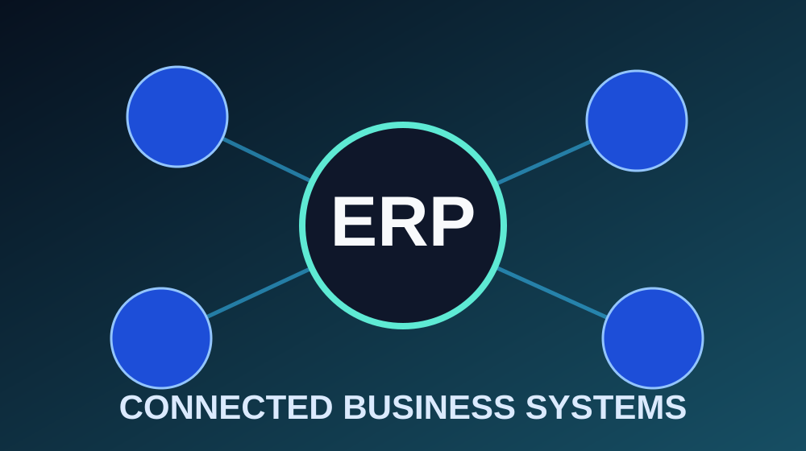

Turning Data into Decisions
How analytics helps businesses uncover patterns, measure performance, and improve management decisions.
Read article →Insights on process improvement, data analytics, ERP systems, artificial intelligence, and the technology that helps businesses move forward.
How analytics helps businesses uncover patterns, measure performance, and improve management decisions.
Read article →
How process mapping, automation, and continuous improvement can eliminate waste and improve flow.
Read article →
Why integrated systems matter and what managers should consider beyond the software itself.
Read article →This website is a personal academic blog for Information Technology for Managers.
It applies web-design principles, information architecture, responsive design, cloud hosting, and digital content management while discussing AI, analytics, ERP, and process improvement from a management perspective.
About the project →For academic, professional, or project-related discussions, feel free to reach out.
Send an Email